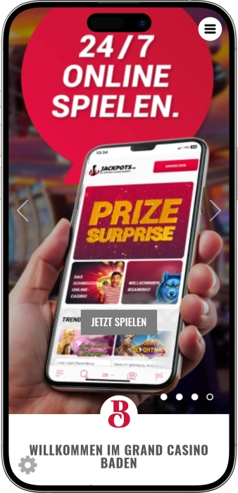

Exklusives Willkommensangebot von
Exklusives Willkommensangebot von
Grand Casino Baden — House of Entertainment: Spiel, Gastronomie & Nightlife
Top-Casino
Bonusdetails
Casino
Boni
Rate
Freispiele
Mehr Infos
Erhalten
Vorteile
-
Über 300 Slots und elektronische Spiele.
-
Klassiker am Tisch: Roulette, Blackjack, Poker täglich.
-
Tägliches Cashgame und häufige Pokerturniere abends.
-
Big Shot: hauseigenes Würfelspiel für Gruppen.
-
PLÜ Restaurant: offiziell 14 Gault&Millau‑Punkte ausgezeichnet.
-
COCO Baden: Live‑Musik, Partys und Vermietung.
-
Parkhaus 24/7 plus abends Valet Parking.
- Das Casino liegt fünf Gehminuten vom Bahnhof Baden; ab Zürich sind es rund 16 Minuten mit dem Zug. Lange Öffnungszeiten, klare Eintrittsregeln und eine starke Gastronomie machen den Standort vielseitig – vom Pokerabend bis zum Wochenend‑Entertainment.
Grand Casino Baden App


Über Grand Casino Baden
- Jackpots.ch‑Bonus: CHF 1’000 + 200‑Freispiele
- Paket: 2 Jetons CHF 5.
- Jackpots: verfügbar 5.
Das Grand Casino Baden ist ein stilvoller Ort für Spiel und Freizeit. Hier verbinden sich klassische Tische mit modernen Spielautomaten. Der Pokerbereich sorgt für eine lebendige Atmosphäre und regelmässige Events. Gäste profitieren von klaren Regeln und aufmerksamem Service. Restaurant und Bar runden den Abend mit einem vollwertigen kulinarischen Erlebnis ab.
Musikprogramme und Themenanlässe verstärken die Eindrücke. Die Lage ist bequem für die Anreise mit Zug und Auto. Die Innenbereiche sind auf Komfort und Sicherheit ausgerichtet. Die Online‑Plattform erweitert den Zugang zu legaler Unterhaltung in digitaler Form. Der Standort eignet sich gleichermassen für den Wochenendabend, ein Businesstreffen oder eine Feier.
Grand Casino Baden: Stil, Gastronomie und "House of Entertainment»
Das Grand Casino Baden steht für eine moderne Interpretation klassischer Casinokultur: stilvolle Räume, bewusst gesetztes Licht und Musik schaffen die «House of Entertainment»-Atmosphäre, in der Spiel, Gastronomie und Events nahtlos ineinandergreifen — nur wenige Schritte vom historischen Kurpark und dem Thermalquartier entfernt.
Die Öffnungszeiten sind auf Abendgäste zugeschnitten: der Automatenbereich ist täglich vom späten Morgen bis in die frühen Morgenstunden geöffnet, Live‑Tische starten jeden Tag am Nachmittag; der Eintritt ist ab 18 Jahren mit einem gültigen Ausweis möglich, beim Erstbesuch wird das Dokument aus regulatorischen Gründen sicher eingescannt. So wissen Sie genau, wann Sie kommen, was Sie mitbringen und welche Zonen aktiv sind.
Für Drinks und Kulinarik sorgen der Bugsy Bar und das Restaurant‑Lounge PLÜ: Cocktails, Signature‑Burger und eine saisonale Karte machen Spielpausen zum Genussmoment, während der Tages‑/Abendbetrieb der Küche ein vollwertiges Dinner vor oder nach dem Spiel ermöglicht. PLÜ ist im Gault&Millau ausgezeichnet, die Terrasse bietet Blick in den Kurpark — ein eigenständiger Hotspot für Gäste aus Zürich und der Region.
Die Stadt hilft der Anreise: vom Bahnhof sind es rund fünf Gehminuten bis zum Eingang, ab Zürich fährt der Zug in wenigen Minuten; das Casino verfügt über ein eigenes Parkhaus und abends über Valet Parking. Wer ein Hotel in der Nähe wählt, findet im Zentrum und im Thermalviertel zahlreiche Optionen — so lassen sich Dinner, Spiel, Konzert und Übernachtung im selben Radius kombinieren.
Entertainment gibt es auch jenseits der Tische: der erneuerte Club COCO Baden (ehemals Club Joy) bietet Live‑Musik, Quiz‑Dinner, Themenpartys und ist als Eventlocation buchbar; die Casinobühne selbst bespielt Afterwork‑Konzerte, Tanzshows und saisonale Specials bis spät in die Nacht. Für Spieler läuft ein dichtes Pokerprogramm mit täglichen Cashgames und häufigen Turnieren am Abend.
Beim Thema Vorteile und Treue lohnt sich ein genauer Blick: der GRANDWINNERS‑Club bietet ab Silver‑Level Privilegien wie freien Eintritt für Mitglied und Begleitperson, während Pakete wie «Dine & Gamble» Dinner, Regel‑Intro und Zugang kombinieren. Digital erweitern Sie das Erlebnis über Jackpots.ch, die lizenzierte Online‑Plattform des Betreibers. Alle Angebote sind in der Schweiz vom Geldspielgesetz und den Regeln für verantwortungsvolles Spielen gerahmt.
Sprachen, Zahlungen und Bargeld: So läuft es im Grand Casino Baden
Das Team des Grand Casino Baden kommuniziert mehrsprachig; verfügbar sind Deutsch, Englisch, Französisch und Italienisch. Diese Sprachabdeckung ist im lokalen Branchenverzeichnis vermerkt und erleichtert die Gäste‑Betreuung an Empfang, in den Spielsälen sowie in den Gastronomiebereichen.
Bei den Zahlungen folgt der Standort der gängigen Schweizer Praxis: vor Ort werden Bargeld und verbreitete bargeldlose Methoden akzeptiert. Der Betreiber Stadtcasino Baden AG bestätigt in einer Fallstudie, dass innerhalb seiner Zahlungslandschaft CHF und gängige Fremdwährungen an der Kasse angenommen werden, ebenso Visa/Mastercard/Maestro sowie TWINT und Banküberweisungen für grössere Beträge. Für Gäste bedeutet das eine reibungslose Abwicklung am Cash Desk und an der Bar, konform mit den Identifikations‑ und Compliance‑Vorgaben für terrestrische Casinos.
Wer Bargeld benötigt, findet rund um die Bahnstation die nächstgelegenen Automaten: im Bahnhof Baden auf der Metroshop‑Ebene ist der Raiffeisen Bancomat rund um die Uhr geöffnet, ebenso der PostFinance Postomat; zusätzlich steht ein UBS‑Bancomat beim Standort an der Badstrasse 12 mit 24/7‑Zugang zur Verfügung. Alle drei liegen in Gehdistanz zum Casino und zum Bahnhof.
Den Umtausch von Fremdwährungen erledigt man praxisnah am Cash Desk beim Jetonkauf: der Betreiber weist die Annahme von CHF und gängigen Fremdwährungen aus, sodass keine separate Wechselstube nötig ist. Für das digitale Angebot der Marke gilt die lizenzierte Plattform Jackpots.ch; Einzahlungen sind dort sofort via Kreditkarte, PostFinance/PostCard, TWINT, Apple Pay, paysafecard und via Banküberweisung möglich, Auszahlungen erfolgen gemäss den gesetzlichen Vorgaben auf ein Schweizer Bankkonto des Spielers.
Besuchsregeln im Grand Casino Baden: Stil, Zutritt und Anreise
Im Grand Casino Baden gelten klare Regeln, die Komfort und Sicherheit für alle Gäste garantieren. Der Dresscode ist smart casual: gepflegte Kleidung ist erwünscht, Sportkleidung und Strand‑Schuhe passen nicht zu den Spielsälen. Der Zutritt ist für volljährige Gäste mit gültigem Ausweis möglich; beim Erstbesuch wird das Dokument aus regulatorischen Gründen sicher eingescannt. Vor dem Eintritt in die Spielbereiche werden Mantel, grosse Taschen und Schirme im Garderobenbereich deponiert, damit Wege frei bleiben und der Spielfluss nicht gestört wird. Gästen unter Einfluss von Alkohol oder anderen Substanzen sowie Personen mit Waffen oder gefährlichen Gegenständen wird der Eintritt verweigert; eine Ausnahme bei Tieren gilt nur für Assistenzhunde mit Nachweis. Die Öffnungszeiten sind auf Abend‑ und Nachtbesuche ausgelegt: der Automatenbereich läuft täglich bis in die frühen Morgenstunden, Live‑Tische starten am Nachmittag — ideal für Dinner und Spiel in einem Ablauf. Die Anreise per Bahn ist besonders bequem: vom Bahnhof Baden sind es wenige Gehminuten bis zum Eingang, ab Zürich dauert die Fahrt nur kurze Zeit. Für Autofahrer steht ein eigenes, videoüberwachtes Parkhaus zur Verfügung, ergänzt durch Valet Parking am Abend; bei hoher Auslastung sind zahlreiche Alternativparkplätze in der Nähe vorhanden. Das Casino arbeitet im Rahmen des Geldspielgesetzes und setzt Spielerschutz sowie Prüfungen konsequent um. Das Eventprogramm bietet Live‑Musik und Themenabende — frühe Reservationen für Restaurant und Tickets machen den Besuch noch entspannter. Die Einhaltung dieser Regeln bewahrt das stilvolle Ambiente und beschleunigt den Eintritt, damit Sie Ihre Zeit optimal geniessen.
Dresscode
- • Smart casual, keine Sportkleidung oder Flip‑Flops: zu kurze Shorts und Strand‑Outfits sind im Spielsaal nicht erlaubt.
- • Kopfbedeckungen erlaubt bei Identifizierbarkeit: das Gesicht muss dauerhaft erkennbar bleiben.
- • Garderobe obligatorisch für grosse Gegenstände: Mäntel, grosse Taschen und Schirme werden vor Betreten des Spielsaals abgegeben.
Zutrittsbedingungen
- • Ab 18 Jahren mit gültigem Ausweis: Pass, ID oder Führerausweis werden akzeptiert.
- • Erstbesuch mit Ausweis‑Scan: Datenverarbeitung gemäss Regulatorik und Datenschutz.
- • Responsible Gaming und Compliance: Umsetzung des Schweizer Geldspielgesetzes und Spielerschutz.
Verbote
- • Kein Zutritt unter Einfluss von Substanzen: Sicherheit und Wohlbefinden gehen vor.
- • Waffen und gefährliche Gegenstände untersagt: Eintritt wird verweigert.
- • Keine Tiere im Casino: Ausnahme für Assistenzhunde mit Nachweis.
Parken & Anreise
- • Per Zug — besonders bequem: vom Bahnhof Baden in wenigen Minuten zum Eingang.
- • Eigenes Parkhaus plus Valet: Parkhaus mit Videoüberwachung und Valet Parking am Abend; Alternativparkplätze in Gehdistanz.
- • Anfahrt über die A1: Ausfahrt Baden und innerstädtische Wegweisung führen direkt zur Haselstrasse.
GRANDWINNERS im Grand Casino Baden: Programm, Levels, Anmeldung und Boni
Das Loyalitätsprogramm von Grand Casino Baden heisst GRANDWINNERS — ein Gästeclub mit den Levels von Member bis Black Circle, der zwei Punktetypen nutzt: Level Points (für den Status) und Coins (für Prämien). Bereits ab Member sammeln Sie Punkte und erhalten Willkommensvorteile; ab Silver gibt es einen der wichtigsten Benefits: freier Eintritt für Mitglied und Begleitperson. Coins lassen sich vielseitig einlösen — u. a. für Valet Parking am Abend, Parkticket, Eintritt gegen Coins sowie –20% auf das PLÜ‑Menü bei Bezahlung mit Coins; am Geburtstag gibt es Spielguthaben und doppelte Coins. Das Ökosystem ist omnichannel: das Online‑Casino Jackpots.ch hat ein eigenes Treue‑System mit Level Points und Coins, die im Reward‑Shop u. a. für Restaurant‑ und Casino‑Gutscheine eingelöst werden können — die Brücke zwischen Online und Landcasino ist offiziell beschrieben. Online ist die Logik klar: für CHF 2 Einsatz an Slots gibt’s 1 Level Point + 1 Coin (Tisch/Live/Arcade 1 Punkt pro CHF 5); Level Points werden jeweils am 1. Januar zurückgesetzt, Coins bleiben bestehen. Anmelden können Sie sich am Empfang oder via GRANDWINNERS‑Bereich auf der Website; wie beim Casinobesuch gilt Mindestalter 18 und gültiger Ausweis. Zusätzlich zu den Dauerbenefits gibt es Pakete: Dine & Gamble kombiniert Menü, Eintritt, CHF 10 Spielguthaben bzw. 2×CHF 5 Jetons und optional Aperitif/Cocktail. Für Übernachtungsgäste in Baden bietet das CityTicket freien Eintritt plus Startguthaben — ein Extra‑Boost für den Gegenwert des Aufenthalts.
Registrierungsbedingungen
- • Ort & Weg: Anmeldung am Casino‑Empfang oder online im Bereich GRANDWINNERS («Jetzt anmelden & Grandwinner werden!»).
- • Alter/ID: ab 18 Jahren; beim Erstbesuch wird der Ausweis gemäss Regulatorik gescannt.
- • Start der Punkte: nach der Anmeldung sammeln Sie Level Points (Status) und Coins (Prämien) automatisch.
Levels und wie man aufsteigt
- • Level‑Leiter: Member → Silver → Gold → Diamond → Diamond Millionaire → Black Circle; Aufstieg über Level Points.
- • Online‑Regeln: bei Jackpots.ch je CHF 2 Slots = 1 Level Point + 1 Coin, Tisch/Live/Arcade = 1/1 pro CHF 5; Level Points Reset am 1. Januar, Coins bleiben.
- • Omnichannel Nutzen: Coins im Reward‑Shop u. a. für Restaurant‑/Casino‑Vouchers; Programm von Gamanza entwickelt, explizit für Online↔Landcasino‑Synergien.
Alle verfügbaren Boni
- • Freier Eintritt ab Silver für Mitglied + Begleitperson; Standard‑Eintritt kostet CHF 10.
- • Eintritt gegen Coins: 1’700 Coins pro Person.
- • Valet Parking: abends CHF 10 oder 7’300 Coins; Parkticket: 6’200 Coins.
- • Gastronomie‑Vorteil: –20% auf PLÜ‑Menü bei Bezahlung mit Coins.
- • Geburtstagsgeschenk: Spielguthaben + doppelte Coins.
- • Pakete: Dine & Gamble mit Eintritt, Menü und CHF 10 Spielguthaben bzw. 2×CHF 5 Jetons; inkl. Apéro/Cocktail je nach Paket.
- • CityTicket‑Zusatz: für Hotelgäste freier Eintritt + Startguthaben.
Softwareanbieter
Unterhaltung und Gaming im Grand Casino Baden
Boni, Gewinne und Spezialangebote im Grand Casino Baden
Im Grand Casino Baden stehen progressive Jackpots, Gastro‑Pakete und Saison‑Events im Fokus — auch ganz ohne Clubstatus. Auf dem Slot‑Floor laufen lokale und netzwerkgebundene Jackpots, u. a. Anbindungen an den Swiss Jackpot (an ausgewählten Automaten), wo Gewinne in den Millionen‑Bereich reichen; parallel spielt der lokale Baden Mystery Jackpot auf rund zweihundert Slots mit Mindesteinsätzen ab 5 Rappen. Mit Dine & Gamble kombinieren Gäste Dinner und Spiel: im Paket sind Menü, Eintritt und Spielguthaben (z. B. CHF 10 oder 2×CHF 5 Jetons) sowie optionale Drinks/Aperitif enthalten. Für Übernachtungsgäste in Baden gibt es das CityTicket: Hotelpartner gewähren freien Eintritt plus Startguthaben. Das saisonale Programm umfasst Afterwork Live Music, klassische Dinner‑Shows/Quiz Dinner und die Silvester‑Gala The 19th Sparkling Night. An Feiertagen verlängert das Casino die Öffnungszeiten offiziell bis 05:00, sodass Events und Spiel entspannt ausklingen. Wer online weiterspielen möchte, findet beim Markenableger Jackpots.ch einen legalen Schweizer Anbieter mit Willkommensbonus bis CHF 1’000 + 200 Freispielen und regelmässigen Content‑Promos. Zusätzlich lassen sich Event‑ und Gastro‑Pakete skalieren — von Cocktail & Gamble bis Limo & Gamble mit freiem Eintritt für alle Mitfahrenden.
Spielboni und Jackpots
- • Swiss Jackpot (netzwerk, progressiv): ein Teil der Slots ist schweizweit vernetzt; Gewinne im Millionen‑Bereich sind charakteristisch für diesen Pool.
- • Baden Mystery Jackpot (lokal): auf ca. 200 Slots aktiv; Mindest‑Stake ab CHF 0.05; Auszahlungsbetrag variiert und fällt spontan je nach Pool.
- • «5 Jackpots» im Haus: vor Ort laufen fünf Jackpot‑Pools parallel; Summen ändern sich dynamisch.
Spezialangebote «Dinner + Spiel»
- • Dine & Gamble: 3/4/5‑Gang (CHF 89/99/109), Eintritt und CHF 10 Spielguthaben (Promojetons/Promoticket); Upgrades: +CHF 50 Extra‑Guthaben, Cocktail +CHF 15, Aperitif +CHF 15, Valet/Parking +CHF 5.
- • Dine & Gamble (Tourismus Zürich): Apéro, Eintritt Grand Jeu & Automaten, 2×CHF 5 Jetons, Regel‑Erklärung durch Croupiers und Cocktail — Preis ca. CHF 95 p.P.
- • Cocktail & Gamble: freier Eintritt, Cocktail und CHF 10 Spielguthaben; ab CHF 25 im Gutscheinshop.
- • Limo & Gamble: Hummer‑Stretch (bis 8 P.) ab CHF 450; freier Eintritt für alle Fahrgäste.
Saison‑Events und verlängerte Öffnungszeiten
- • The 19th Sparkling Night (31.12): Silvestergala mit Show/Musik; Dinner/Tickets frühzeitig reservieren.
- • Afterwork Live Music / Dinner‑Shows / Salsa Spektakel: wiederkehrende Live‑Formate; Monatskalender laufend aktualisiert.
- • Feiertagszeiten bis 05:00: an ausgewählten Tagen offiziell längere Öffnung — Details im Bereich Besucherinfo.
Online‑Promos bei Jackpots.ch
- • Willkommensbonus: bis CHF 1’000 + 200 Freespins für Neu‑Accounts; abhängig von Einzahlung und Spielkategorien, T&C und 18+.
- • Inhalts‑Promos: zeitlich begrenzte Aktionen pro Provider/Spielkategorie; Ankündigungen auf Jackpots.ch.
Beliebte Spiele im Grand Casino Baden: Klassiker, Elektronik & Big Shot
Im Grand Casino Baden treffen klassische Tische und ein grosser Slot‑Floor aufeinander – ideal für Einsteiger wie für geübte Spieler. Besonders gefragt sind Roulette und Blackjack; neben den Live‑Tischen sorgen elektronische Terminals und i‑Formate für ein flottes Spieltempo und einen einfachen Einstieg. Ein Publikumsliebling ist die hauseigene Würfelvariante Big Shot – eine dynamische Adaption von Sic Bo/Craps, die mit Freunden besonders viel Spass macht. Kartenfans setzen auf Poker mit täglichen Cashgames und regelmässigen Turnieren in Texas Hold’em und Omaha; die Crew unterstützt bei Regeln und Seating. Im Automatenbereich warten 300+ Slots – von Video‑Slots bis zu Jackpot‑Geräten sowie elektronische Roulette/Blackjack‑Titel. Für einen sanften Einstieg eignet sich die elektronische «Roulette‑Insel» mit niedrigen Limits und klarer Bedienung. Insgesamt steht Baden für «House of Entertainment»: Spiel, Dinner und Abendevents greifen ineinander – entsprechend vielseitig ist auch die Spielauswahl. Das Resultat ist ein stimmiger Mix aus schneller Elektronik, atmosphärischen Live‑Tischen und lokalen Spezialitäten, die man so in der Schweiz kaum sonst findet.
Kurzbeschrieb der Hauptspiele
- • Slots & Jackpots: über 300 Geräte von Klassik bis Video; teils mit Jackpot‑Anbindung, plus elektronische Roulette/Blackjack‑Titel.
- • Roulette (klassisch & elektronisch): Live‑Tische mit Croupiers plus «Insel» elektronischer Roulette für schnelle Runden und kleine Einsätze.
- • Blackjack (inkl. Swiss Jack & iTable): neben der klassischen Variante gibt’s Swiss Jack und iTable für zügige, intuitive Sessions.
- • Poker (Texas Hold’em & Omaha): tägliche Cashgames, häufige Turniere; Team hilft bei Regeln und Platzwahl.
- • Big Shot (hausgemachtes Würfelspiel): Badener Variante von Sic Bo/Craps mit vielen Setzoptionen und Gruppen‑Feeling.
- • Easy Poker (gegen den Dealer): schnelles Drei‑Karten‑Format, bei dem man gegen die Bank spielt – simpel und rasant.
Minimale und maximale Einsätze im Grand Casino Baden
Für Roulette sind die offiziellen Mindestbeträge (tagsüber) sowie die erhöhten Mindestbeträge (abends/wochenends) dokumentiert; ein indikativer Maximalwert stammt aus einem externen Verzeichnis. Bei allen anderen Spielen veröffentlicht das Casino die Limits direkt am Tisch bzw. im Saal — und passt sie je nach Tag, Auslastung und Tischformat an. Elektronische Stationen haben eigene Geräteeinstellungen.
| Spiel | Minimum | Maximum |
|---|---|---|
| Roulette (klassische Tische) | 2 | bis 500 (Richtwert) |
| Roulette (elektronische «Insel») | 1 | je Station (Terminals) |
| Blackjack (inkl. iTable/Swiss Jack) | laut Tisch‑Schild (vor Ort) | laut Tisch‑Schild (vor Ort) |
| Big Shot (hauseigene Würfel‑Variante) | laut Tisch‑Schild (vor Ort) | laut Tisch‑Schild (vor Ort) |
| Ultimate Texas Hold’em (gegen den Dealer) | laut Tisch‑Schild (vor Ort) | laut Tisch‑Schild (vor Ort) |
| Poker (Cashgame) | gemäss ausgerufenem Blind‑Level (abends) | je nach Tisch/Format |
| Slots / elektronische Games | je Spiel/Automat (Display) | je Spiel/Automat (Display) |
House of Entertainment im Grand Casino Baden: Clubnacht, Live‑Musik, Themen‑Shows & Saison‑Highlights
Im Grand Casino Baden bedeutet «House of Entertainment», dass abends stets etwas läuft: Live‑Musik, Themen‑Shows, Dinner‑Formate und spezielle Events spannen den Bogen vom Afterwork‑Act bis zur grossen Jahresend‑Gala. Der Event‑Kalender wird laufend aktualisiert; dort finden Sie Zeiten, Inhalte und Ticketlinks für jede Woche.
Dreh‑ und Angelpunkt des Nightlife ist der Club COCO Baden (ehemals Club Joy): Partys mit DJs, Live‑Konzerte, Quiz‑Dinner, Specials und im Sommer eine Terrasse mit Blick in den Kurpark; die Location kann für Private/Corporate gebucht werden. Der wöchentliche Puls kommt u. a. von Afterwork Live Music (häufig Donnerstags) mit kompakten Live‑Sets und tanzbarem Repertoire.
Kulinarik ist fest ins Entertainment integriert: Dine & Dance und Entertainment/Quiz Dinner vereinen Menü, Moderation/Show und Interaktion; wer das Spiel «soft» dazu nehmen möchte, nutzt Dine & Gamble mit Menü, Eintritt und Promo‑Guthaben. So entsteht ein durchgeplanter Abend ohne Medienbruch — von Aperitif über Show bis zum kurzen Abstecher ins Grand Jeu.
Im Kalender finden sich regelmässig Themen‑Nights und Social‑Formate: Ladies Special, das Nachmittagslotto, die Salsa Spektakel‑Abende sowie Samstags/Feiertags‑Programme mit verlängerten Öffnungszeiten. Zum Jahreswechsel glänzt die The 19th Sparkling Night — die Silvestergala mit Show, Musik und Special‑Menü; an Feiertagen ist offiziell bis 05:00 geöffnet.
Die Planung ist simpel: Programm und Ticket‑Buttons liegen im Bereich «Veranstaltungen», Teile der Pakete sind zusätzlich im Gutschein‑Shop erhältlich; touristische Portale flankieren die Agenda mit Highlights der Bäder‑/Kulturstadt Baden. Für Prime‑Dates (Fr/Sa, Feiertage) empfiehlt sich eine frühzeitige Reservation.
Alle wichtigen Entertainment‑Formate
- • COCO Baden (Club) — Partys, DJ‑Nights, Live‑Gigs, Quiz‑Dinner; Vermietung für Private/Corporate, Sommer‑Terrasse.
- • Afterwork Live Music (regelmässig, oft Do.) — kompakte Live‑Konzerte zum Feierabend, schneller Einlass, tanzbar.
- • Dine & Dance — Dinner mit anschliessendem Tanz/Show in einem Paket, ideal für Paare und Gruppen.
- • Entertainment / Quiz Dinner — moderierter Dinner‑Abend mit Interaktion und kleinen Show‑Einlagen.
- • Dine & Gamble — 3/4/5‑Gänge, Eintritt und Promo‑Spielguthaben (z. B. CHF 10), optionale Drinks/Parking.
- • Salsa Spektakel — Latin‑Dance‑Night mit Social/Einführung; energiegeladener Dancefloor.
- • Ladies Special — Themenabende mit kleinen Extras und Aktionen.
- • Nachmittagslotto — leichte Daytime‑Unterhaltung mit Ziehungen im Haus.
- • The 19th Sparkling Night (31.12) — Silvester‑Gala mit Show/Musik, verlängerte Öffnung, Reservation empfohlen.
Gastronomie, Hotels und Erholung im Grand Casino Baden: essen, trinken, tanzen & entspannen
Das kulinarische Herzstück ist das PLÜ Restaurant & Lounge: stilvolle Lounge, Terrasse und eine Küche mit 14 Gault&Millau‑Punkten; geöffnet Mo–Sa 11:00–23:00, So 10:30–22:00, inklusive Sonntagsbrunch. Der Fokus liegt auf regionalen Produkten und hausgemachter Pasta; Küchenchef ist Enrique Isler Benedicto. Für Drinks im Spielsaal sorgt der Bugsy Bar — Signature‑Cocktails und «The Grand Burger», die Einlassregeln und der Dresscode stehen im Bereich Besucherinfo.
Das Nightlife pulsiert im COCO Baden (vormals Club Joy): Afterwork Live Music, Partys, Quiz‑Dinner und Specials; die Location ist als Eventspace mit moderner Bühnen‑/Soundtechnik mietbar und skaliert bis ~380 Gäste (Party) bzw. ~250 (Konzert). Im Sommer lädt die Terrasse mit Kurpark‑Blick ein.
Zum Übernachten liegen mehrere Häuser in Fussdistanz: Ramada by Wyndham Baden Hotel du Parc (5 Gehminuten zum Bahnhof; Kurpark, Casino, Thermalbad in der Nähe), Trafo Hotel und Blue City Hotel; eine schnelle Übersicht gibt Hotels.com/Tripadvisor. Für Wellness empfiehlt sich das Limmathof Baden Hotel & Spa mit dem öffentlichen Novum Spa (Thermalwasser mit hohem Mineralgehalt, Pool, Saunen/Dampfbad, Salz‑/Eisraum) und Private Spa Suites.
Die Anreise/Parkierung ist bequem: das Casino verfügt über ein Parkhaus mit ~206 Plätzen (24/7) und zusätzlich abends über Valet Parking — Fahrzeugabgabe direkt am Eingang ab 19:00, Preis CHF 12 inkl. Parkgebühr; GRANDWINNERS Diamond nutzt den Service gratis, Silver/Gold/Member können ihn mit Coins bezahlen.
Alle Relax‑Spots
- • PLÜ Restaurant & Lounge — 14 Gault&Millau‑Punkte; Zeiten: Mo–Sa 11:00–23:00, So 10:30–22:00; Sonntagsbrunch; Kurpark‑Blick.
- • Bugsy Bar — Cocktails & «The Grand Burger» im Spielsaal; Einlass/Dresscode siehe Besucherinfo.
- • COCO Baden (Club) — Partys, Live‑Musik, Quiz‑Dinner; Vermietung; Terrasse zum Kurpark.
- • COCO Baden — Private Event — Setups: Party ~380 P., Konzert ~250 P., Flying Dinner ~70 P.
- • Ramada by Wyndham Baden Hotel du Parc — nahe Casino/Kurpark/Therme; 5 Min zum Bahnhof.
- • Trafo Hotel / Blue City Hotel — zentrale City‑Hotels unweit des Casinos.
- • Limmathof Baden Hotel & Novum Spa — Spa‑Quartier, öffentliches Novum Spa + Private Spa Suites.
- • Parkhaus Grand Casino — gedeckte Garage ~206 Plätze, 24/7, publizierte Tarife.
- • Valet Parking (ab 19:00) — Abgabe am Eingang; CHF 12; Diamond gratis, Silver/Gold/Member via Coins.
FAQ
Fundsachen bitte dem Personal oder an der Rezeption abgeben; für verlorene/gestohlene Gegenstände haftet das Casino nicht. Ausserhalb des Hauses hilft das städtische Fundbüro Baden (Online‑Suche und Stadtbüro). [grandcasinobaden.ch], [baden.ch]
Das Gelände (inkl. Aussenbereich) wird videoüberwacht; die Aufzeichnungen werden in der Regel 28 Tage aufbewahrt. Grand Casino Baden ist nach ISO 27001 zertifiziert (Datenschutz/Informationssicherheit).
Der Höchstgewinn am einzelnen Geldspielautomat beträgt CHF 1 000 000 pro Automat und pro Spieltag; der Swiss Jackpot wird gleichmässig geteilt, wenn er gleichzeitig an mehreren Geräten/Standorten ausgelöst wird. Automaten‑Tickets sind 30 Tage gültig; Auszahlungen erfolgen nur für rechtmässig erlangte Gewinne (keine Auszahlung bei technischen Fehlern/Manipulation).
Ja — Mitglieder des GRANDWINNER Clubs können via Slot Reservation ihren Automaten kurzfristig sperren (zuvor Cash‑out). Die Reservierung erlischt automatisch; mit dem Login an einem anderen Automaten verfällt sie. Das Casino haftet nicht für im Gerät belassene Beträge/erzielte Gewinne.